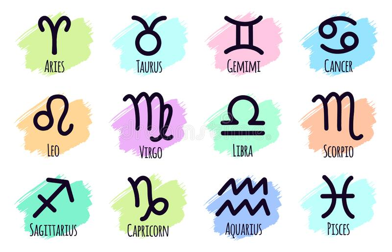
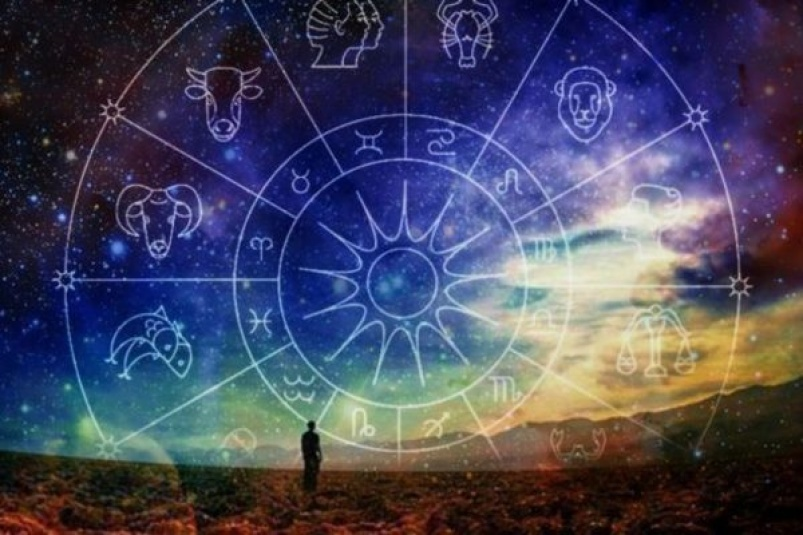

гороскоп на сегодня
22 февраля 2022
22 лунные сутки. Луна все еще в Скорпионе, а значит, мы будем зависеть
от наших тайных желаний. Только не стоит их кому-либо открывать – пусть
это останется только при нас. Можно экспериментировать как на работе,
так и в личной жизни. Возможно, от этого наши дела будут двигаться
быстрее, а результат будет просто обалденным. В этот день Вселенная
обязательно подкинет вам сюрпризы, дары – поэтому смотрим по сторонам и
под ноги. Внешние и внутренние барьеры сейчас будут ставить нам палки в
колеса будущего. Но если мы будем держать себя в руках, двигаться
спокойно и меньше осторожничать, то точно добьемся своего. Читайте
личный гороскоп и не поддавайтесь пессимизму.

гороскоп на завтра
23 февраля 2022
В начале дня удастся разобраться с мелкими делами, накопившимися за
последнее время, решить какие-то организационные вопросы. Пригодится
опыт, полученный давным-давно. Благодаря ему со многими задачами удастся
справиться быстро. Полезными будут и старые связи – особенно для тех,
кто решит сосредоточиться на рабочем проекте. Вторая половина дня будет
благоприятной для общения. Хорошо пройдут и деловые, и личные встречи.
Даже люди, которые познакомились недавно, без труда поладят. Близкие не
станут спорить из-за пустяков, легко договорятся о совместных действиях.

гороскоп на неделю
21 февраля 2022
На этой неделе все новое будет казаться особенно интересным. Именно
потому многим захочется не заниматься привычными делами, а взяться за
что-то совершенно другое. Правда, тут сложно будет правильно оценить
свои силы, на первом этапе могут возникнуть какие-то трудности. Но даже
это не снизит энтузиазма, не заставит бросить начатое. Люди, которые
проявят настойчивость, обязательно добьются успеха. Многие разногласия
останутся в прошлом, наконец найдут общий язык те, кто прежде ссорился
из-за любого пустяка. И деловые, и личные отношения на этой неделе будут
складываться гармонично, едва ли принесут какие-то поводы для
переживаний и волнений. Напряженные моменты могут изредка возникать, но
все постараются сгладить острые углы как можно скорее. Очень полезно
будет уделить внимание своим чувствам и переживаниям, постараться
разобраться вы том, что на самом деле движет вами, заставляет поступать
так, а не иначе. Интуиция поможет ответить на многие важные вопросы.
гороскоп на месяц
1 февраля 2022
Начало февраля – яркое и насыщенное время. Первые дни месяца радуют
необычными встречами, приятными знакомствами, позволяют заметно
расширить круг общения. Это благоприятное время для начала новых
отношений, и неважно, будут ли они носить деловой, дружеский или
романтический характер. Благоприятны эти дни с точки зрения работы;
особенно заметных успехов добьются те, чья профессия связана с
творчеством. Повезти может и тем, кто планирует в это время заключить
сделки. С середины месяца начинается период, когда на первый план
выходят личные отношения. Здесь могут произойти большие перемены к
лучшему, потому что едва ли кому-то захочется вспоминать о старых
проблемах, неприятных моментах прошлого и разногласиях. Близкие люди
охотно идут навстречу друг другу, легко находят компромисс, объединяют
усилия для преодоления общих трудностей. Стабильные пары убеждаются, что
чувства по-прежнему сильны, интерес друг к другу высок, а возможность
провести время вместе радует даже больше, чем раньше. Начало февраля
обещает быть особенно удачным с точки зрения финансов: доходы в это
время могут расти. А вот во второй половине месяца могут потребоваться
заметные траты. Не всегда они обязательны. Прежде чем расставаться с
деньгами, подумайте, нельзя ли сэкономить.
